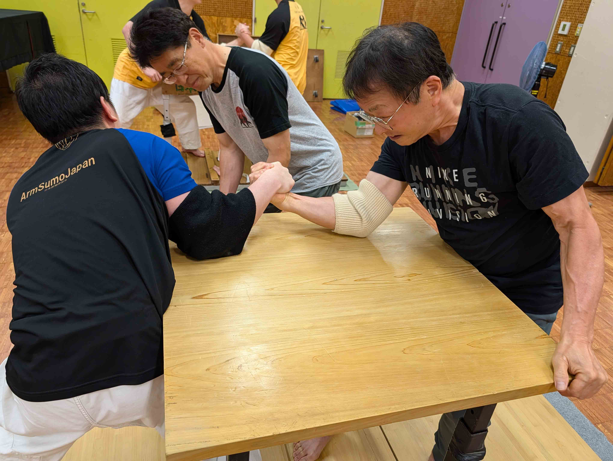

本協会は、勝負にこだわり勝つことを目的としたものではなく、 そこに至るまでの「過程」そのものに重きを置き、 身体の鍛錬のみならず「質実剛健の精神の持主」を志す、 心身育成のスポーツ団体です。

日本腕相撲協会の腕相撲は、 肘を自由に動かす独自ルールによって、 スピード感あふれる、 全身運動としての競技性を実現しています。
また、 「四十八手」 に及ぶ多彩な技を有し、 力だけではなく、 技術・駆け引き・精神力が重要となります。
本協会員は、 礼を重んじ、 相手を尊敬し、 自己完成の場として競技に向き合います。
親睦を旨とし、 人の和を忘れず、 協調・友好を是とする理念を大切にしています。